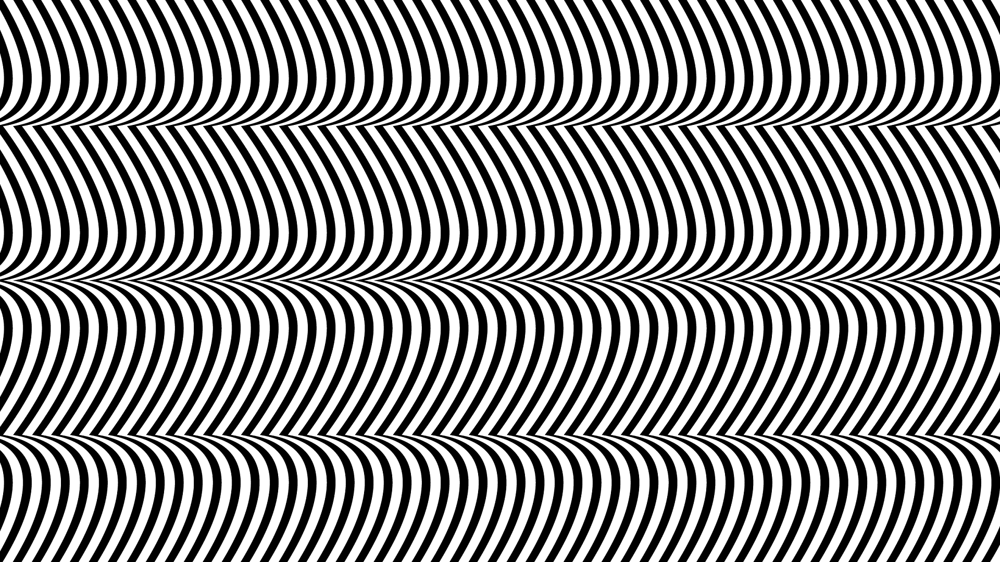
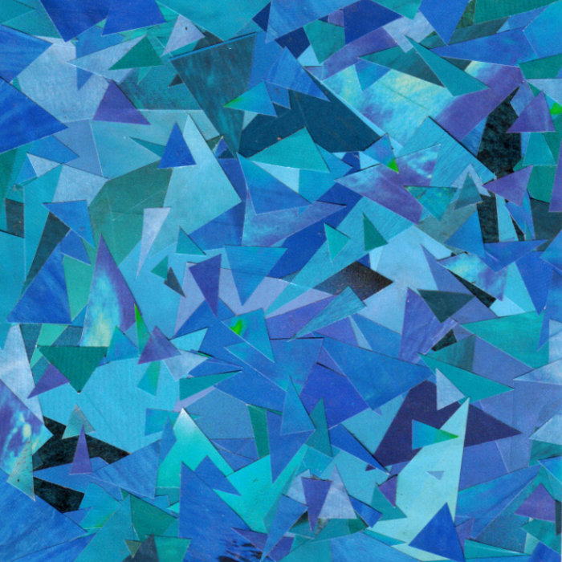
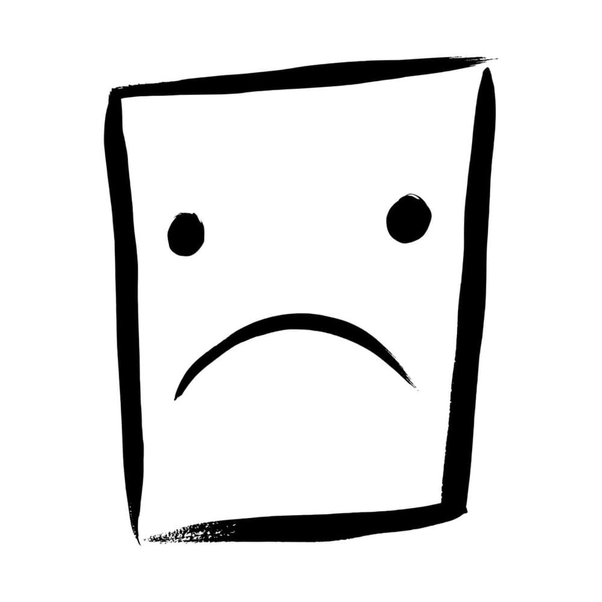
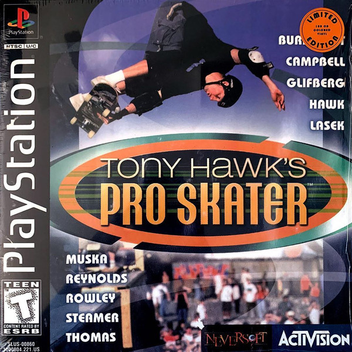
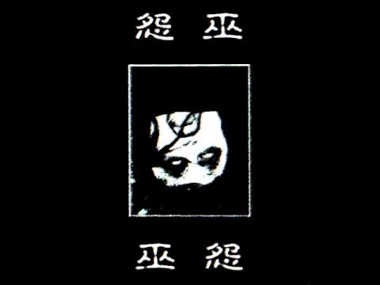
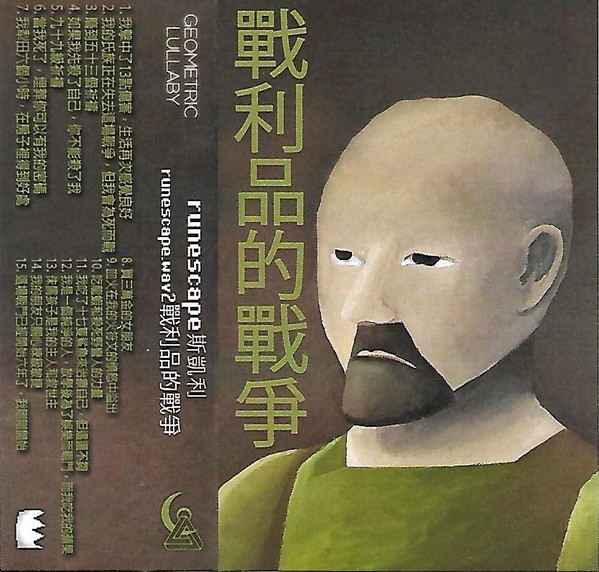
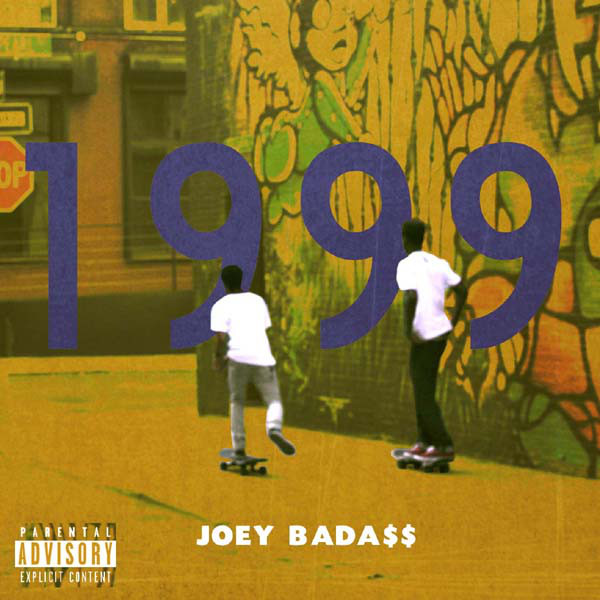
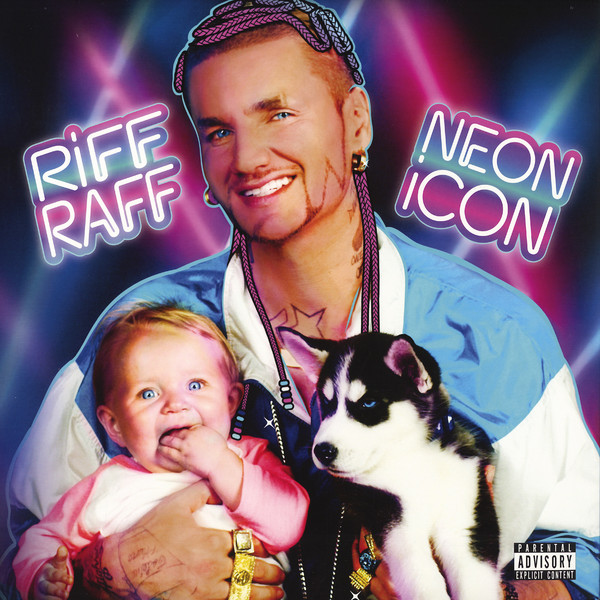
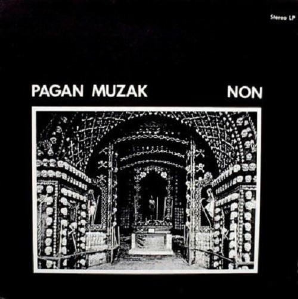

The records or tapes that have eluded the collection due to lack of online sellers
or extreme monetary value. These are the most desired and sought out pieces of physical media
to Bearcat Records.

Merzbow - Pulse Demon
Pulse Demon, the magnum opus from the most renowned
harsh noise artist, Merzbow. There are two pressing that are well
sought out: BLUDHONEY’s silver and black “spiral blast” and Relapse
Record’s White+Clear Rainbow Splatter.
*ACQUIRED* (Milky Clear With Black Butterfly Wings And Neon Violet And Neon Green Splatter Repress)
Girlfriends - s/t
A record very unique to the emo scene. A perfect
blend of math rock and emo, often imitated but never replicated.
Pressed independently on transparent blue.


William Bonney - All Ten
All the greatest elements from our 2000s screamo
adolescence but evolved to the modern standards of 2018. The greatest
skramz album of recent years. Limited edition pressed on gold by
Skeletal Lightning.
bootleg Tony Hawk Pro Skater soundtrack
My childhood was built upon the N64. I only owned
a handful of games, two being THPS 1 and 2. I was enthralled and molded
by this series. I played them religiously up ending at Project 8.
The 1+2 remake was phenomenal. Anyways, to say this soundtrack is
iconic is an understatement. That two second opening drumline on
Superman – Goldfinger is forever burned into my brain. The sleeve
art being the PS1 case art is a cherry on top. This is an
unofficial release pressed on solid red.


Wuyuan - Enemite
A notable name in the Chinese black ambient scene.
A harrowing combination of traditional Chinese sounds, black metal
Chinese vocals, and lengthy dark drones. Pressed on classic black
by Psychedelic Lotus Order and Remastered on a double LP with two
demo tracks by GoatowaRex.
runescape斯凱利 – runescape.wav2單戰利品的戰爭
If you know me you know I’m a diehard fanatic for
a few select things. One of those being Runescape. You should’ve known
that if you browsed the vault and saw my Runescape Greatest Hits
record. This is an absolutely gorgeous album which remixes
Runescape’s greatest tracks and sounds into ethereal ambient tracks.
This isn’t a record but a glitter clear cassette produced by
Geometric Lullaby.


Joey Bada$$ - 1999
One of my favorite rap projects period, a mixtape
from the rap collective Pro Era. Featured on three tracks is the late,
great Capital STEEZ. This mixtape also features the track Suspect
which cypher between all of Pro Era. I like to refer to it as the
Oldie before Oldie. Many bootlegs exist but the sought after
pressing come from Pro Era Records themselves, the most coveted of
which comes in a smooth Purple Swirl.
Riff Raff - Neon Icon
Riff Raff’s greatest album, no question.
Every song on this project are straight earworms. Kokayne, Tip Toe Wing
In My Jawwwdinz, Aquaberry Dolphin featuring the late, great
Mac Miller, and many more. This project is pure, unadulterated fun.
A 2xLP pressed on classic black by Mad Decent.


NON - Pagan Muzak
Pagan Muzak simultaneously introduced me and got
me hooked on noise music. Instead of overwhelming chaotic walls of
white noise, we instead here have 17 untitled tracks of noise loops.
The genius of the project comes in the record itself. It’s a one
sided 7″ of 17 locked grooves… the 17 untitled tracks. It also
includes an off center hole for an alternate method of play.
Pressed in 1978 by Greybeat Records.